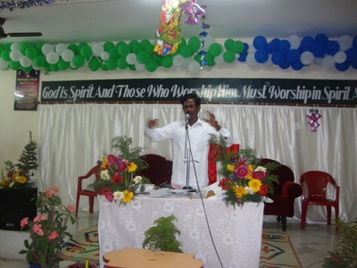
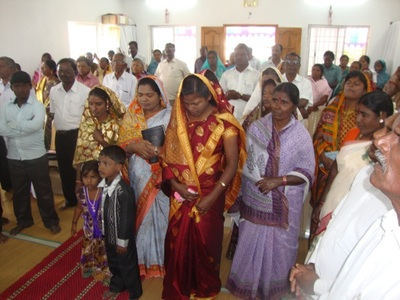
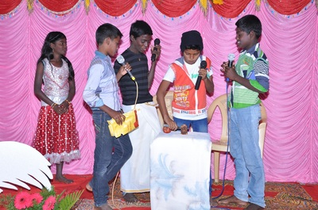
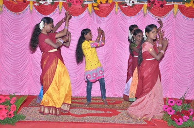
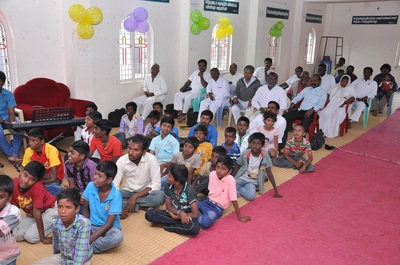
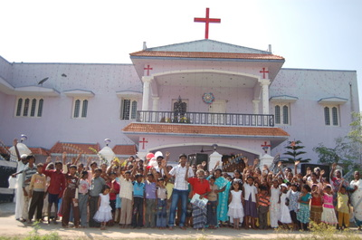
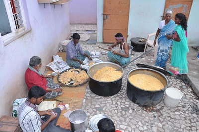

Medical Outreach
Free camps and care for those without access in rural Vellore and Tiruvannamalai.
Pentecostal Mission · Vellore, Tamil Nadu
Hallelujah Village Church Trust is planting churches and serving the least among us in rural India — widows, orphan children, rural pastors, and the vulnerable — in the name of Jesus Christ.
HVCT invites cross-cultural missionaries and resource persons to share in the ministry — visiting the mission spots, staying for a time, and taking part in medical, educational, crusade, theological, and social service work.
About HVCT
Hallelujah Village Church Trust is a Pentecostal fellowship gathered under the grace of God and the illumination of the Holy Spirit. Our heart is the Great Commission of Mark 16:15 — “Go ye into all the world, and preach the gospel to every creature.”
We work to conserve the unity of the Church as the body of Christ, uphold biblical principles, and honor the baptism of the Holy Spirit (Acts 2:4). Our labour is among the least and most needy: widows, orphan children, rural pastors, lepers, the elderly, and Sunday school children.
We ask for your prayer and partnership in three urgent works — leadership training for rural pastors, education for orphan children, and a sustaining ministry for widows and Bible women.


Our Mission
Go ye into all the world, and preach the gospel to every creature.
— Mark 16:15What we do
Free camps and care for those without access in rural Vellore and Tiruvannamalai.
School, food and a future for orphan children in our care — and a sponsor program for partners.
Open-air meetings, evangelism and discipleship in villages across two districts.
Preaching, Bible teaching and leadership training for rural pastors and Bible women.
Walking alongside widows, the elderly, lepers and the most vulnerable in our community.
An open invitation for cross-cultural missionaries to come, stay, and serve alongside us.
Our Beliefs
Our doctrine is rooted in Scripture, the inspired Word of God. The summaries below are the core convictions that shape our worship, our witness and our work.
The Bible is the inspired Word of God, the product of holy men of old who spoke and wrote as they were moved by the Holy Spirit. The New Covenant, as recorded in the New Testament, we accept as our infallible guide in matters pertaining to conduct and doctrine.
2 Tim. 3:16 · 1 Thess. 2:13 · 2 Peter 1:21
Our God is one, but manifested in three Persons — the Father, the Son, and the Holy Spirit — being coequal. The Father is greater than all, the Sender of the Word and the Begetter. The Son is the Word flesh-covered, the One Begotten, who has existed with the Father from the beginning. The Holy Spirit proceeds forth from both the Father and the Son and is eternal.
Deut. 6:4 · Phil. 2:6 · John 14:28 · John 16:28 · John 1:1, 14, 18 · John 14:16 · John 15:26
Man is a created being, made in the likeness and image of God, but through Adam's transgression and fall, sin came into the world. “All have sinned, and come short of the glory of God.” Jesus Christ, the Son of God, was manifested to undo the works of the devil and gave His life and shed His blood to redeem and restore man back to God. Salvation is the gift of God to man, separate from works and the Law, and is made operative by grace through faith in Jesus Christ, producing works acceptable to God.
Rom. 3:10, 23 · Rom. 5:14 · 1 John 3:8 · Eph. 2:8–10
Man's first step toward salvation is godly sorrow that worketh repentance. The New Birth is necessary to all men, and when experienced, produces eternal life.
2 Cor. 7:10 · John 3:3–5 · 1 John 5:12
Baptism in water is by immersion, is a direct commandment of our Lord, and is for believers only. The ordinance is a symbol of the Christian's identification with Christ in His death, burial, and resurrection. The baptismal formula: “On the confession of your faith in the Lord Jesus Christ, the Son of God, and by His authority, I baptize you in the Name of the Father, and the Son, and the Holy Ghost. Amen.”
Matt. 28:19 · Rom. 6:4 · Col. 2:12 · Acts 8:36–39
The Baptism in the Holy Ghost and fire is a gift from God as promised by the Lord Jesus Christ to all believers in this dispensation and is received subsequent to the new birth. This experience is accompanied by the initial evidence of speaking in other tongues as the Holy Spirit Himself gives utterance.
Matt. 3:11 · John 14:16,17 · Acts 1:8 · Acts 2:1–4, 38–39 · Acts 19:1–7
Without holiness no man can see the Lord. We believe in the Doctrine of Sanctification as a definite, yet progressive work of grace, commencing at the time of regeneration and continuing until the consummation of salvation at Christ's return.
Heb. 12:14 · 1 Thess. 5:23 · 2 Peter 3:18 · 2 Cor. 3:18 · Phil. 3:12–14 · 1 Cor. 1:30
Healing is for the physical ills of the human body and is wrought by the power of God through the prayer of faith, and by the laying on of hands. It is provided for in the atonement of Christ, and is the privilege of every member of the Church today.
James 5:14,15 · Mark 16:18 · Isa. 53:4–5 · Matt. 8:17 · 1 Peter 2:24
His coming is imminent. “The dead in Christ shall rise first: Then we which are alive and remain shall be caught up together with them in the clouds to meet the Lord in the air.” Following the Tribulation, He shall return to earth as King of kings and Lord of lords, and together with His saints He shall reign a thousand years.
Acts 1:11 · 1 Thess. 4:16–17 · Rev. 5:10 · Rev. 20:6
The one who physically dies in his sins without accepting Christ is eternally lost in the lake of fire. The terms “eternal” and “everlasting” carry the same meaning of endless existence used in denoting the joy of the saints in the Presence of God.
Heb. 9:27 · Rev. 19:20



Sponsor an Orphan Child
For many of the children in our care, the local church is the only family they have ever known. Your monthly sponsorship provides food, schooling, clothing, and the quiet love of a community that knows their name.
We are honoured to walk with sponsors from around the world. The monthly amount will be confirmed by Pastor John when you reach out — together we'll find a way of giving that works for your family.
Make a Mission Trip
We extend an open hand to cross-cultural missionaries, pastors, teachers, nurses, and resource persons. Come and visit the mission spots, stay for a time, and take part in the ministry firsthand.


Gallery
Partner with HVCT
Every gift, however small, goes a long way in the villages of Vellore. You will be feeding a child, schooling an orphan, encouraging a rural pastor and sending the gospel further into Tamil Nadu.
Send a gift via PayPal to
A dedicated PayPal.me donation link will be added here once it is created. In the meantime, please send your gift to the email address above using PayPal's “Send Money to a Friend” feature.
Thank you for your prayers and your partnership. “Every good gift… cometh down from the Father of lights.” — James 1:17
Contact
Whether you are sponsoring a child, planning a visit, or just want to say a prayer with us, we'd be honoured to hear from you.
{kind=link}
{kind=link}
{kind=link}
{kind=link}
{kind=link}
{kind=link}
{kind=link}
{kind=link}
{kind=link}
{kind=link}
{kind=link}
{kind=link}
{kind=link}
{kind=link}
{kind=link}
{kind=link}
{kind=link}
{kind=link}
{kind=link}
{kind=link}
{kind=link}
{kind=link}